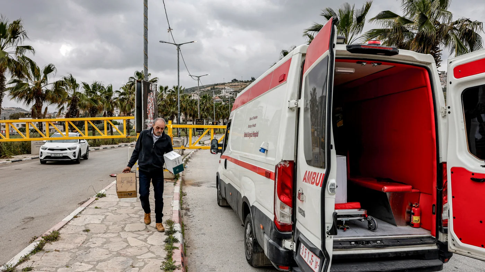

استخدام الشعار
الريشة وخريطة فلسطين بألوان العلم، والاسم بالأسود. لأن الاسم أسود، لا يوضع الشعار مباشرة على سطح داكن أو على صورة: يوضع دائمًا على لوح أبيض مقطوع بقُطر الريشة.
الألوان والتباين
ألوان العلم مضبوطة للشاشة الداكنة: الأحمر #CE1126 للفعل (أزرار، تصنيفات، نقاط) على الفاتح، ونسخته الفاتحة #FF4D5E للنص الأحمر على الحبر. الأخضر للبثّ والوقت: #007A3D على الفاتح و#35C97C على الداكن. كل نص في الموقع يتجاوز 4.5:1.
#0B0B0C · السطوح الداكنة- أبيض عليه 19.7:1
- #A3A3A9 عليه 7.8:1
#141416 · شريط التنقل، الخط الزمني- أبيض عليه 18.4:1
- #FF4D5E عليه 5.7:1
#FFFFFF · مساحات المحتوى- #111113 عليه 18.9:1
- #55575C عليه 7.2:1
#F1F2F2 · كتلة النشرة- #55575C عليه 6.4:1
- #CE1126 عليه 5.0:1
#CE1126- أبيض عليه (زر) 5.6:1
- عليه الأبيض كنص 5.6:1
- على الحبر 3.5:1 رسوم فقط
#FF4D5E- على الحبر 6.1:1
- للتصنيفات والأرقام 1–3
#007A3D- أبيض عليه 5.5:1
- على الأبيض كنص 5.5:1
#35C97C- على الحبر 9.2:1
- «مباشر»، التواريخ، الخط الزمني
الخطوط
Reem Kufi · 600 / 700 · العنوان الرئيسي ورؤوس الأقسام وعناوين النشرة وشعار التذييل فقط. كوفي هندسي حادّ يشبه قَطع السنّ.
Vazirmatn · 400 / 500 / 700 · المتن والواجهة وعناوين البطاقات والآراء والخط الزمني والأكثر قراءة.
3 مليارات شيقل ديون على السلطة
خطر الحراك التخريبي يتطابق مع ظاهرة ميليشيات الاحتلال
معالجات اخبارية
قضية تهريب بـ200 مليون شيقل تجر اسم حسين الشيخ إلى الواجهة
تتجه السلطة إلى تأسيس شركة جديدة تابعة لـ”ياسر عباس”، تتولى شراء المحروقات وتخزينها..
كشفت القناة 15 العبرية تفاصيل لائحة اتهام تتعلق بشبكة واسعة لتهريب البضائع إلى قطاع غزة خلال الحرب.
بعد ضغوط سفير السلطة.. دولة خليجية تُبعد ناشطين فلسطينيين
لا تباعد بين الحروف العربية أبدًا. الأرقام غربية كما في الموقع. الخطوط مستضافة ذاتيًا بصيغة woff2 مع رخصة OFL.
العلامة البصرية: قُطر الريشة
الريشة في الشعار مائلة من السنّ أسفلًا إلى طرف الريشة أعلى. هذا الميل يتكرر: حافة مائلة على عناوين الأقسام والأزرار ولوح الشعار، وزاوية مقصوصة كالسنّ على الصور، والمثلث الأحمر من جذر الريشة نقطةً تتجه مع اتجاه القراءة.
المكوّنات
تحليلات واراء
المزيدالقصة في ارقام
المزيدمعالجات اخبارية

تحليلات واراء
إهمال السلطة الفلسطينية يهدد بانهيار المستشفيات في الضفة الغربية
تحليلات واراء
دائرة السنّ: بديل حين لا توجد صورة
البنية على الشاشات
رأس مركزي والشعار كبير في الوسط، تحته شريط تنقل بعرض الصفحة مع «مباشر». الخبر الرئيسي صورة تمتد حتى حافة الشاشة بعنوان فوقها على ثلثي العرض، وبجانبها خط زمني طويل لآخر الأخبار. الأقسام صفوف من 4 أعمدة على المكتب وسكك أفقية تنزلق على الهاتف. شرائط داكنة تتناوب مع مساحات فاتحة.
رئيسي ⅔ ممتد للحافة + خط زمني ⅓ بتمرير داخلي. أقسام 4 أعمدة. الأكثر قراءة لاصق بجانب الآراء.
نفس البنية بأعمدة أضيق؛ زر القائمة يحل مكان نص الرأس.
رئيسي بعرض كامل، الخط الزمني تحته بعمودين، الأقسام عمودان، الأكثر قراءة بعمودين.
رأس لاصق 70px مع قائمة جانبية، التنقل شريط أفقي، الأقسام سكك تنزلق، أهداف لمس ≥ 44px.